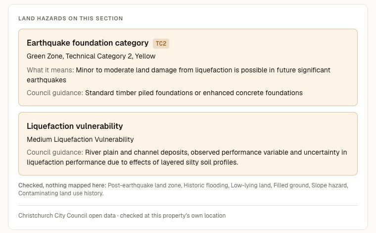
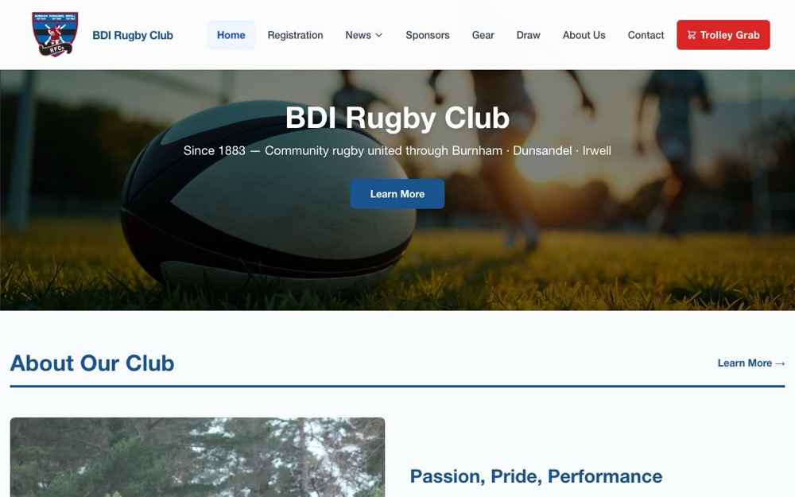

01The path经历
- 2026 —
Software Engineer Intern · MediaJira软件工程实习生 · MediaJira
Full-stack product work in a production codebase with Kafka, WebSockets and Celery. 在生产代码库中做全栈功能开发，接触 Kafka、WebSockets、Celery。 - 2025 —
Service Desk Analyst · Stantec服务台分析师 · Stantec
Identity, endpoints, VPN, DNS in a global enterprise. I find the root cause with Splunk and hand it on with the evidence, so the next team doesn't have to ask again. 在全球化企业环境中处理身份、终端、VPN、DNS 问题。我用 Splunk 找到根因，连同证据一起交给下一级团队，让他们不必再回头追问。 - 2024 – 2025
Graduate Diploma in Software Development · Ara软件开发研究生文凭 · Ara 坎特伯雷理工学院
Top Student 2024. Plus a cloud engineering internship at Tradeshift: Terraform drift, observability dashboards, GitHub Actions. 2024 年度优秀学生。期间在 Tradeshift 做云工程实习：处理 Terraform 配置漂移、维护监控面板、GitHub Actions。 - 2022 – 2025
Retail · Swarovski, Freedom Furniture零售 · Swarovski、Freedom Furniture
Where I learned to listen to what people actually need — still the most useful skill in support and product work. 在这里学会倾听别人真正需要什么——这至今是我在技术支持和产品工作中最有用的能力。 - 2017 – 2021
Editor · travel & digital media编辑 · 旅行与新媒体
New media editor at Condé Nast Traveler (Beijing): about 100 articles, 20+ brand collaborations with partners such as Tourism Canada and Marriott, and 50k+ new followers. Before that, travel writing at ifeng.com, where four of my pieces reached the homepage; after it, content editor at an education company in Shanghai. 在《悦游 Condé Nast Traveler》（北京）做新媒体编辑：写了近百篇文章，与加拿大旅游局、万豪等品牌合作 20 多篇，公众号涨粉 5 万以上。更早在凤凰网旅游频道写旅行稿，有 4 篇上了凤凰网首页推荐；之后在上海一家教育公司做内容编辑。 - 2019
Bachelor of Digital Information · Tianjin Foreign Studies University数字传媒学士 · 天津外国语大学
Led the campus press corps and started its portrait-photography column. 在校时担任学院记者团团长，创办了校园人像摄影专栏。
02Three sides of me三个切面
Start from a real need从真实需求出发
Most of my projects began as my own problem: finding a job, buying a house, typing the same sentences at the service desk. 我的项目大多始于自己的麻烦：找工作、买房、在 Service Desk 一遍遍打同样的话。Follow it down the layers一层层往下追
Network, identity, cloud, database, UI — I'm comfortable crossing layers until I find where it actually broke. 网络、身份、云、数据库、界面——我习惯跨层排查，直到找到真正出问题的地方。Learn wide, then dig先学宽，再挖深
CCNA basics, DevOps, ethical hacking, AWS. Some are already solid, some are holes I'm still digging — see the learning map. CCNA 基础、DevOps、道德黑客、AWS。有的已经扎实，有的是我正在挖的坑——见学习地图。03Now此刻
- Working工作 Service Desk Analyst at Stantec (global, on-call incident response) · Software Engineer Intern at MediaJira Stantec 服务台分析师（全球环境，参与 on-call 事故响应）· MediaJira 软件工程实习生
- Building在做 SmartBuy — a due-diligence tool for buying a house in Christchurch SmartBuy——在基督城买房的尽调工具
- Learning在学 Kubernetes (just finished a first project) · .NET backend, heading toward a payment-processing API Kubernetes（刚做完第一个项目）· .NET 后端，目标是做一个支付处理 API
Updated 13 Oct 2026更新于 2026-10-13
04Things I've built做过的事
SmartBuy NZ · CHCH House Monitor
In progress进行中- Problem起点
- Checking one Christchurch house means opening six government websites — valuation, liquefaction, flooding, rent, schools — and still not knowing what the jargon means. 查一套基督城的房子，要开六个政府网站——估值、液化、洪水、租金、学校——看完还不一定懂那些术语。
- What I did做法
- Type an address, get one report built from council open data queried live at that parcel's coordinates, plus area rent, price trends and schools. A companion pipeline scrapes daily listings, de-duplicates the same house across sites, tracks price history and queues due-diligence reports. 输入地址，按地块坐标实时查询市议会开放数据，生成一份报告，并附上周边租金、房价走势和学校。配套的流水线每天抓取在售房源，跨网站识别同一套房，记录价格历史，并在后台排队生成尽调报告。
- Why it matters为什么重要
- If a lookup fails, the report says "could not be checked" — never "no risk". Hazard definitions come from the official layers, not from a model's memory. In a house-buying decision, a confident wrong answer does real harm. 查询失败时报告写“无法核查”，而不是“无风险”。灾害术语的释义直接取自官方图层，不让模型凭记忆解释。在买房这种决定里，一个自信的错误答案会造成实实在在的伤害。

Customer-service portal · MediaJira客服工单系统 · MediaJira
Work · 2026工作 · 2026- Problem起点
- The support team had no tool of their own for handling customer tickets. 客服团队没有自己的工单处理工具。
- What I did做法
- Built it end-to-end, from the PostgreSQL model and Django REST APIs to the Next.js screens: ticket status machine, SLA countdowns, customer labels and internal notes. Added end-to-end tests and CI health checks, and traced a production login outage to migrations never applied on the server. 端到端搭建：从 PostgreSQL 数据模型、Django REST API 到 Next.js 页面——工单状态机、SLA 倒计时、客户标签与内部备注。补上端到端测试和 CI 健康检查；还排查过一次线上登录故障，根因是服务器上的数据库迁移从未执行。
BDI Rugby Club websiteBDI 橄榄球俱乐部网站
bdirugby.co.nz ↗- Problem起点
- A volunteer-run club needed a site its non-technical committee could keep up to date. 一个由志愿者运营的俱乐部，需要一个不懂技术的委员也能自己更新的网站。
- What I did做法
- Talked with the client, built and deployed the site, and connected a headless CMS so staff edit content without a developer. Wrote them an admin guide too. 和客户沟通需求，开发并上线，接入 headless CMS，让工作人员不靠开发者就能改内容。还给他们写了一份管理员指南。

Koru Interview Hub
GitHub ↗- Problem起点
- Interview practice material rarely reflects the New Zealand and Australian tech job market. 市面上的面试练习材料，很少贴合新西兰和澳洲的技术求职市场。
- What I did做法
- An open-source platform where people share questions from real interviews, sort them by category and difficulty, and practise answering with their past attempts saved. AI feedback on answers is next. 一个开源平台：大家分享真实面试里遇到的题，按类别和难度整理，在线练习作答并保留历次记录。下一步是加入 AI 答案反馈。
Job-search toolkit求职工具箱
Personal个人项目- Problem起点
- Job hunting in NZ is a pile of repetitive work: scrolling listings, matching them to your CV, preparing for interviews. 在新西兰找工作，是一大堆重复劳动：刷职位、对照简历、准备面试。
- What I did做法
- Seek Hunter scrapes listings with Playwright, scores each job description against my CV with the Claude API, and emails me a ranked shortlist. A separate interview bank transcribes my practice recordings locally — the audio never leaves my machine. Seek Hunter 用 Playwright 抓取职位，用 Claude API 把每份职位描述与我的简历对比打分，再把排序后的清单发到我邮箱。另一个面试题库在本地转录我的练习录音——音频不离开我的电脑。
Quick Phrases for Service DeskService Desk 快捷短语插件
Small tool小工具A Chrome extension that inserts frequently used support-chat sentences from the right-click menu. Built after typing the same lines dozens of times a day. 一个 Chrome 插件：右键就能插入常用的客服对话句子。起因是每天要把同样的话打几十遍。
AWS hybrid-cloud failoverAWS 混合云故障切换
Capstone · 2025毕业项目 · 2025Kept a database available during an RDS outage: site-to-site VPN between AWS and on-prem (pfSense), with credentials switched automatically through Secrets Manager. 在 RDS 宕机时保持数据库可用：AWS 与本地机房之间建立站点到站点 VPN（pfSense），数据库凭证通过 Secrets Manager 自动切换。
Earlier, from study: Chess Maze Game (C#, WinForms, MSTest) · Triathlon Workout App (React, Jest) · a Spring Boot banking API. 更早的课程作品：国际象棋迷宫游戏（C#、WinForms、MSTest）· 铁人三项训练应用（React、Jest）· 一个 Spring Boot 银行账户 API。
05Learning map学习地图
What a CV can't show: the breadth behind it, and where I'm digging next. 简历装不下的部分：背后的广度，以及我接下来要往哪里挖。
Cloud云
Solid扎实AWS Solutions Architect Associate (2026), Terraform, hybrid failover. Now adding Kubernetes. AWS 解决方案架构师助理级认证（2026）、Terraform、混合云故障切换。正在补 Kubernetes。
Networking网络
Solid扎实CCNA fundamentals: TCP/IP, DNS, VLANs, Packet Tracer labs. Used daily at the service desk. CCNA 基础：TCP/IP、DNS、VLAN、Packet Tracer 实验。在服务台每天都用得上。
DevOps
Practising实践中CI/CD with Jenkins and GitHub Actions, Docker, plus network automation: REST/RESTCONF, NETCONF, YANG, SDN controllers. Jenkins 与 GitHub Actions 的 CI/CD、Docker，以及网络自动化：REST/RESTCONF、NETCONF、YANG、SDN 控制器。
Security安全
Digging in正在挖Ethical hacking coursework with nine modules of hands-on labs. The next thing I want to go deep on. 道德黑客课程，九个模块的动手实验。这是我下一个想深挖的方向。
Backend后端
Practising实践中Django REST in production, Spring Boot, and now .NET — building toward a payment-processing API. 生产环境中的 Django REST、Spring Boot，现在在学 .NET——目标是做一个支付处理 API。
AI-assisted devAI 辅助开发
Daily日常在用Claude API, Claude Code, MCP. I use AI to move faster, and I still check what it says against the source. Claude API、Claude Code、MCP。我用 AI 提速，但依然会把它说的话拿去对照原始来源。
06How I work我做事的方式
- Unchecked is not the same as safe.没查过，不等于没问题。 When a check fails, say so. A false green light is worse than an honest "I don't know". 检查失败就如实说。一个假的绿灯，比一句诚实的“我不知道”更糟。
- Hand over the whole picture.交接时把全貌交出去。 When I escalate, I include the root cause and the evidence, so nobody has to come back and ask. 升级问题时，我会附上根因和证据，让对方不用再回来问一遍。
- Only claim what I can defend.只写我能当面讲清楚的。 Every skill on this page traces back to something I built or ran. Where my depth is shallow, I say so. 这一页上的每项技能，都能追溯到我真正做过或跑过的东西。哪里还浅，我会直说。
- Solve my own problem first.先解决自己的问题。 If something annoys me every day, it probably annoys someone else too. That's usually where a good small tool starts. 如果一件事每天都烦到我，它多半也在烦别人。好用的小工具通常就从这里开始。
07Notes笔记
Things I'm writing for people on a similar path. 写给走在类似路上的人。
- From retail to service desk to developer: changing careers in New Zealand从零售到服务台再到开发：在新西兰转行的真实路线Drafting写作中
- Checking a Christchurch house with nothing but open government data只用政府开放数据，查清一套基督城的房子Drafting写作中
- How I used AI in my job search — and what I didn't hand over to it我怎样用 AI 求职，以及哪些事我没交给它Drafting写作中
08Say hello联系我
Hiring, a project idea, or a question about any of the above — I'd like to hear it. 招聘、项目想法，或者对上面任何内容的疑问——都欢迎来信。
Christchurch, New Zealand 新西兰基督城